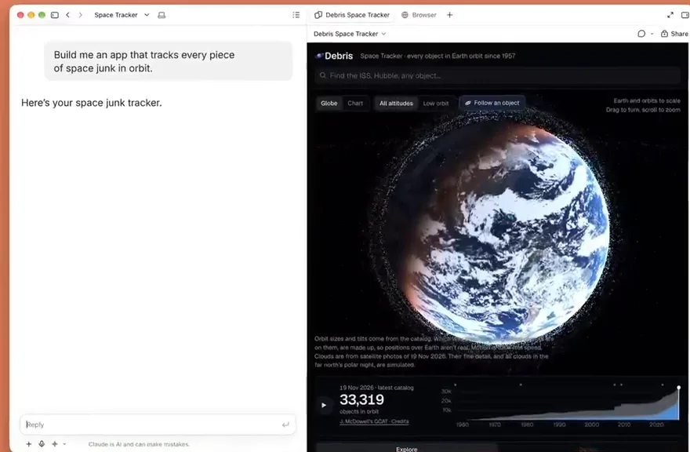
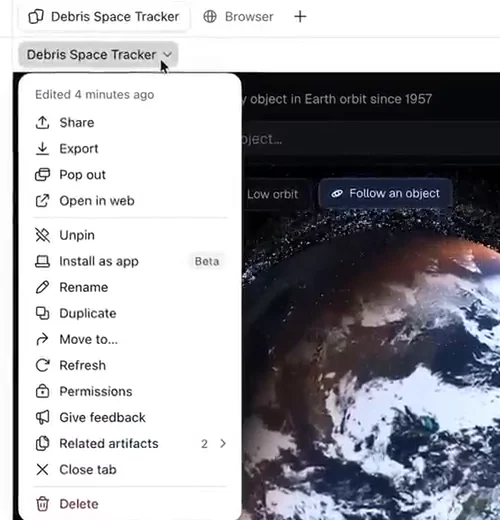
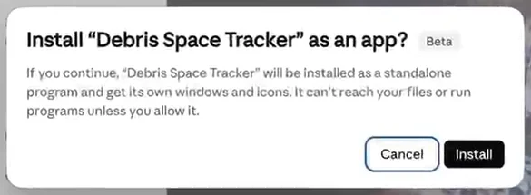
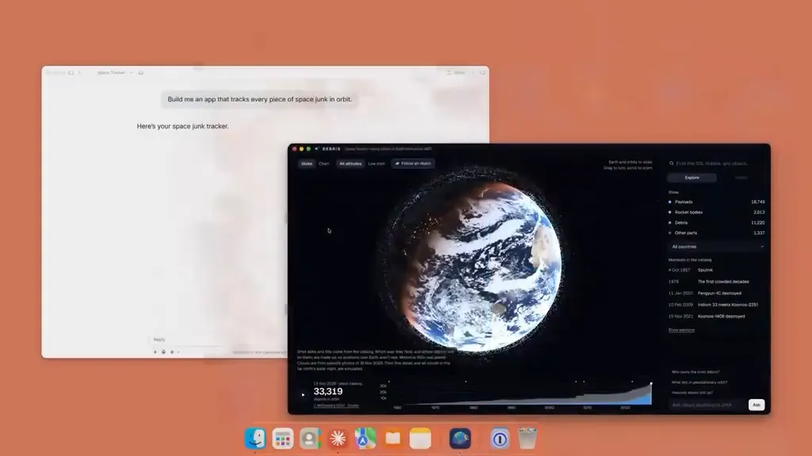

Build your own desktop app. No coding.
- Ask Claude for an appPlain words. Copy the prompt below.
- Click "Install as app"In the app's menu, in the Claude desktop app.
- Open it like any appOwn icon, own window. No Claude chat needed.
Before you start
- A Claude account. Free plan works.
- The Claude desktop app on a Mac or Windows laptop, updated to the latest version (claude.ai/download).
- Internet, and stay signed in. Installed apps need it to open.
- No coding, no API key, nothing else to install.
Prompt 1 · Expense tracker
Make me a simple monthly expense tracker app. I type the amount and pick a category (Food, Petrol, Rent, Shopping, Other). Show the total for this month, a pie chart by category, and warn me in red when I cross ₹20,000. Big buttons, clean design.
Step 1: Ask Claude to build it
Open the Claude desktop app, paste the prompt and send. In a few minutes the app appears next to the chat. Try it, and ask for changes until you like it.

Step 2: Click "Install as app"
Click the app's name at the top of the preview to open its menu, then pick Install as app.

Step 3: Confirm
Claude asks once. Click Install. By default the app can't touch your files or run programs unless you allow it.

Step 4: Open it like any app
It now has its own icon in your Dock or taskbar and opens in its own window. You don't need to find the chat again.

Step 5: Want a change?
Go back to the same chat and ask Claude, for example "Add a Savings category". The installed app updates by itself.
Permissions, simply
- Default: the app can only do what a web page can. Safe for most apps.
- App permissions: extras like notifications, keyboard shortcuts or staying on top of other windows.
- Full computer access: can open programs and read, change or delete files without asking. Only give this to apps you built yourself.
Claude asks again after every update to the app. Anthropic doesn't review apps before you install them, so skip apps from people you don't know.
More apps to try
Copy any of these into Claude the same way.
Bill scanner
Make me a bill scanner app. I drop a photo of a bill, it reads the shop name, date, amount and category, and adds it to a list with a monthly total. Let me download the list as a CSV file.
PDF explainer
Make me a PDF explainer app. I drop a PDF and it explains it in 5 simple lines in Malayalam and English, then lists any dates, amounts or things I need to do.
English coach
Make me an English speaking coach app. Each day give me one topic. I type my answer, it gently corrects my grammar, shows a better version, and keeps a daily streak.
FAQs
Do I need to know coding?
No. You describe the app in plain words and Claude builds it.
Is it free?
Yes. It works on every Claude plan, including Free. It's in beta right now.
Does it work on my phone?
No. It's for the Claude desktop app on Mac and Windows.
Does it work offline?
No. You need to be online and signed in to Claude to open the app.
Does using the app use my Claude limit?
If the app asks Claude something (like reading a bill or a PDF), that counts toward your plan's usage limit. A simple app like the expense tracker barely uses any.
How do I change the app later?
Ask Claude in the same chat. The installed app updates by itself.
Can I share my app with friends?
Yes, you can share it. But tell them only to install apps from people they trust.
Why can't I see "Install as app"?
Update the Claude desktop app first. Some things can't be installed, like Claude Docs, Slides and Sheets. On Team or Enterprise plans, your admin may need to turn it on.